Исполнитель виден на первом экране
Длинное вступление, открытые подуслуги и уведомление о городе отодвигают исполнителя вниз.
Что изменитсяКороткое вступление и свернутые панели освобождают место для имени и перехода в профиль. Город больше не закрывает заголовок.
Открыть страницу после правки
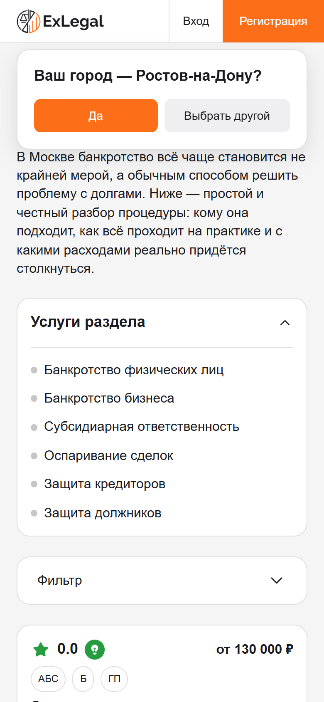
Увеличить снимок
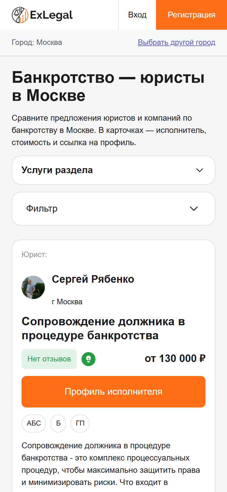
Увеличить снимокПонятно, кто предлагает услугу
Имя исполнителя находится ниже названия услуги; на мобильном кнопка «Подробнее» скрыта.
Что изменитсяТип, фото, имя и город вынесены наверх. Рядом с условиями — явная кнопка «Профиль исполнителя». Настоящие цены и ссылки сохранены.
Открыть страницу после правки
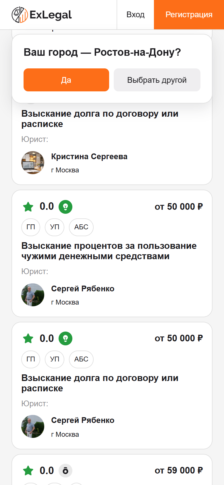
Увеличить снимок
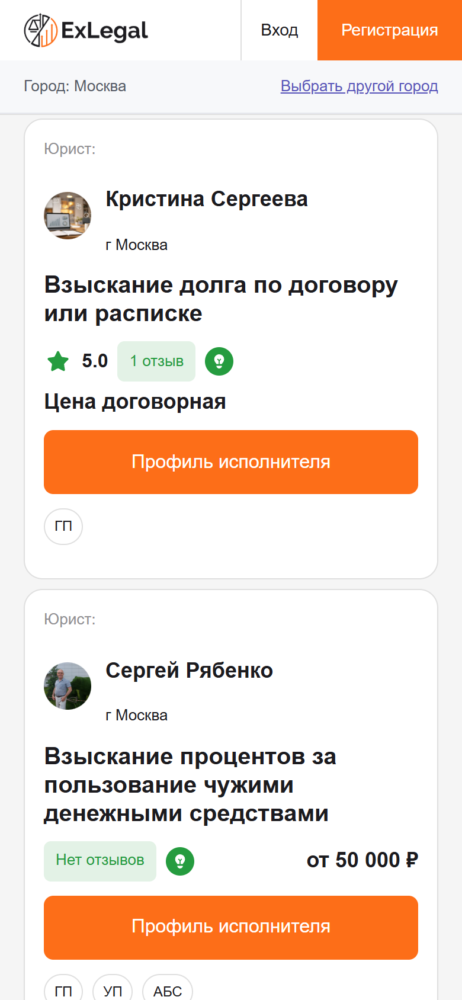
Увеличить снимокТЗ02: карточка на компьютере
Имя исполнителя и кнопка профиля видны без прокрутки. В этом desktop-примере меняется только карточка. Остальная страница сохранена в исходном виде. Это предложение, изменения не внедрены.
- 1Исполнитель в начале карточки
Тип, имя и город перенесены выше описания. На первом экране понятно, кто оказывает услугу.
- 2Профиль в верхней части карточки
Заметная кнопка справа ведёт в настоящий профиль. Её можно нажать без прокрутки к концу описания.
На снимке «Сейчас» имя и «Подробнее» находятся ниже первого экрана. Номера и рамки — пояснения поверх настоящих снимков, они не являются частью сайта.

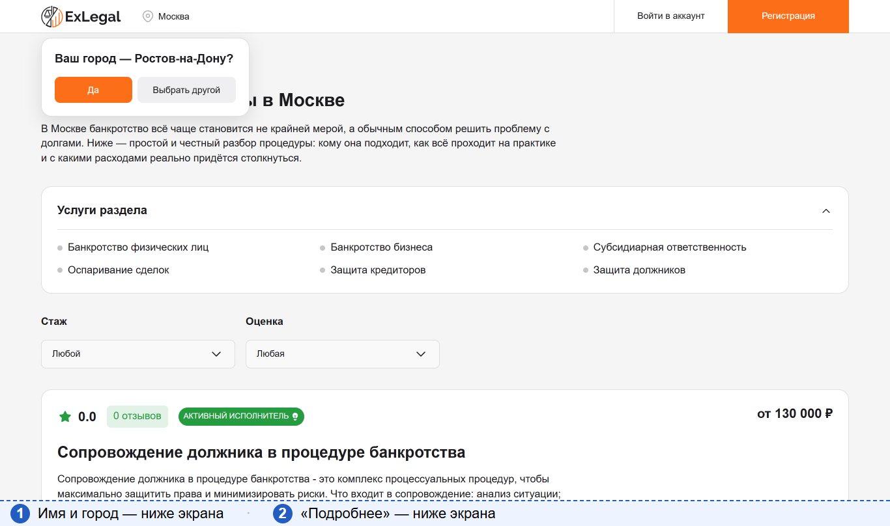
Увеличить снимок ↗
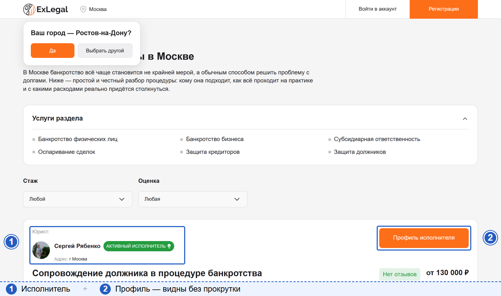
Увеличить снимок ↗Та же карточка целиком — крупно
Это фрагменты прокрученной страницы, не первый экран. Показана полная настоящая карточка Сергея Рябенко. Под ней отдельно увеличены блок исполнителя и кнопка. Увеличения помогают читать детали и не являются новой вёрсткой сайта. Если отзывов нет, вместо нулевого рейтинга показано «Нет отзывов».

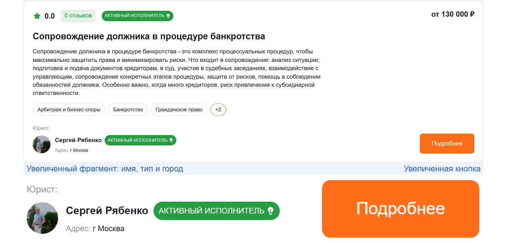
Увеличить снимок ↗
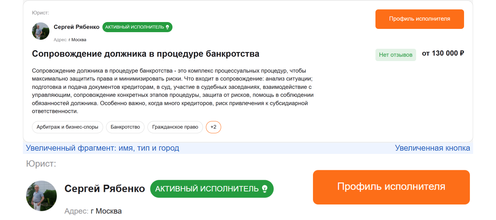
Увеличить снимок ↗Понятный ответ, если предложений нет
Без сообщения об отсутствии предложений посетителю трудно понять, почему он сразу видит подбор юриста.
Что изменитсяПеред существующим квизом появляется ясное сообщение и выбор другого города. Вторая форма не нужна.
Открыть страницу после правки
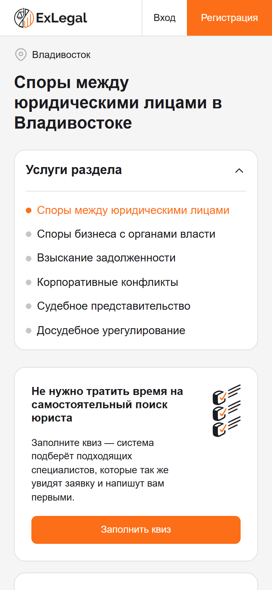
Увеличить снимок
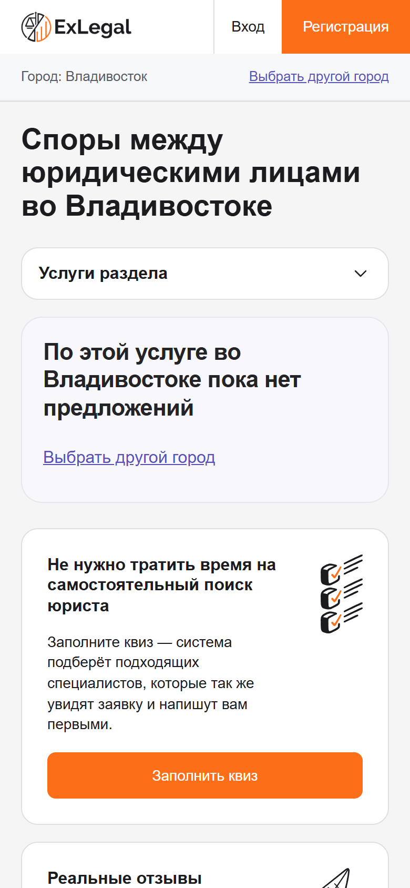
Увеличить снимокОписание услуги находится в логичном месте
На мобильном описание услуги оказывается ниже вопросов и статей — посетитель может до него не дойти.
Что изменитсяСуществующее описание следует за отзывами. Заголовок отзывов уточняет, что они относятся к направлению «Гражданское право».
Открыть страницу после правки
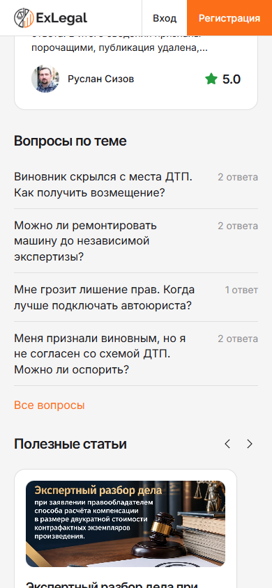
Увеличить снимок
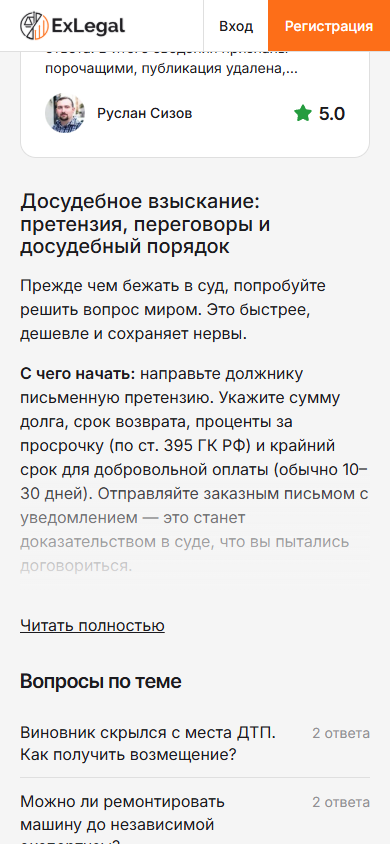
Увеличить снимокУточнение заголовка отзывов
Фрагмент существующего блока. Сами отзывы и их количество сохранены.

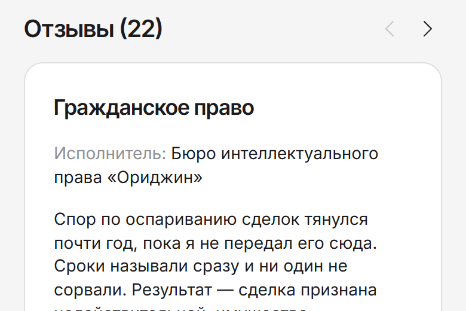
Увеличить снимок
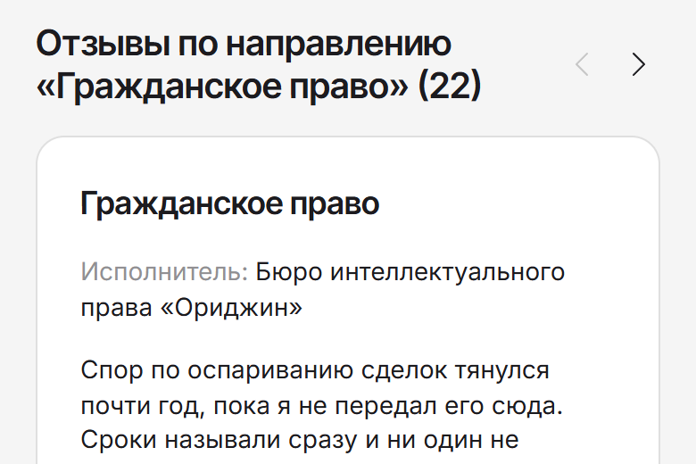
Увеличить снимок